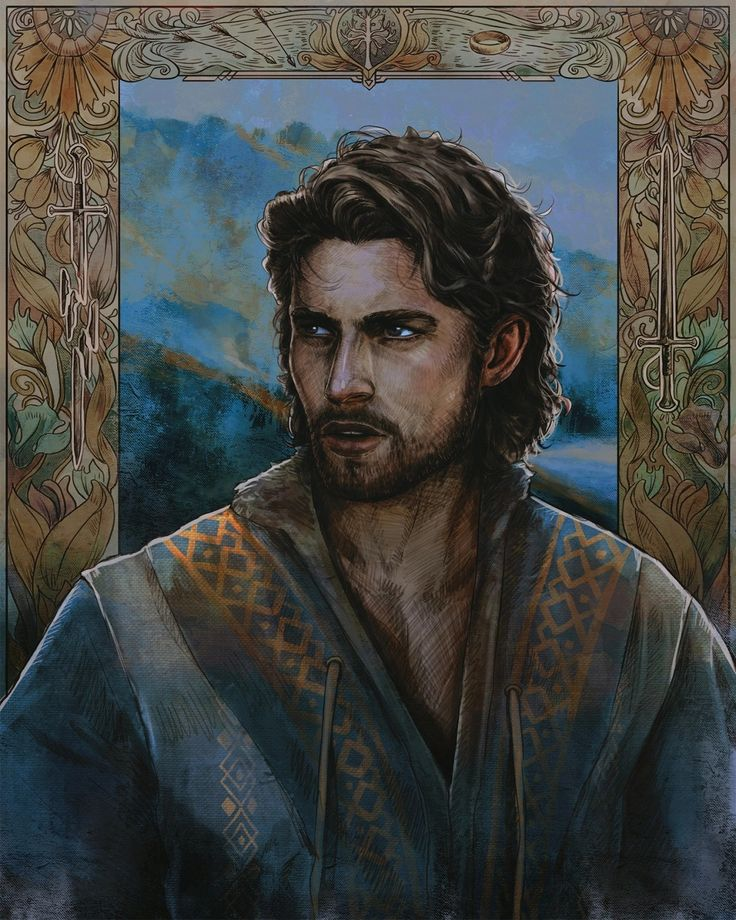

| Haldan Stainmore | senior partner and head of the Factor House of Stainmore, one of the fourteen on the Council of Links · Human · Nalūn, the Amber Cities · as of the eighth month the eastern road has been shut |
| Epithet | the Quittance |
| Concept | A factor who can take back what you owe him, wherever it went, down to the last grain, and never one grain more. |
| Stat line | Stage VI Glory · Expert (Faceted) Level 142 · Refined · Surety Fate VI Mastered, I · Lenses: home + 1 |
| Combat grammar | Verdict: he reads the account aloud and the coin leaves the debtor; he does not strike, and he loses a straight exchange with anyone who does |
| Aura | color: the warmest teal, amber at the rim, laid flat along the lattice of his robe and then across his hands · texture: even and still, it does not flicker · feel: lamp-oil and burnt offering, white rime on his boot welts, lamp flames leaning toward whoever owes; a room goes quiet the way a room does when a ledger is opened |
| How he moves | A walker’s long stride, weight settled back on the heels, chin a little raised; hands kept open and low, the left thumb finding the cord at his throat. He stands like a man who has been told he is in the way and has decided to be polite about it. He stops on stairs for one breath. |
| Stack | sustainable to the Stage VI roof (400) · cap two steps on the hidden scale · layers in play: none (no Release, no Draft, no tags) |
| Bonded weapon | none |
| Kit | a heavy blue-gray wool wrap coat on a sheepskin collar, a house lattice of orange-gold diamonds down the lapel band (Uncommon, the piece people talk about first); a short knife for cord and bread; the oldest token on a cord at his throat |
| Voice | ”Free’s a debt with no date on it.” speaker type: a Hanseatic Kontor alderman crossed with a mountain mule-guide |
| Next gate | Stage VII Refraction · Catalyst: a condition, with a vow held where it should break; the first Domain seed, a flicker of his own Trait for a few seconds · Level hold: 130, already passed, so only the Catalyst is wanting; the One waits behind it on that Stage · Front: the eastern road shut eight months, the Council sits soon on the eastern question |
I. Identity
| Field | Value |
|---|---|
| Full Name | Haldan Stainmore |
| Pronunciation | HAL-dun STAYN-mor |
| Alias / Title | Senior partner of Stainmore · head of the East Road house · Master of the Accord, merchant · the Quittance |
Also Known As
| Name | Who says it |
|---|---|
| The Walking Factor | Ironlink Hold, in the private chambers of the other houses: a senior partner who walked the corridor himself and still wears the road on his face. A sneer. He has heard it and does not correct it. |
| The Salt Lord | the mountain settlements. Nalūn has no lords, so it is a foreigner’s mistake and Ironlink winces at it. Said with thanks while the convoys ran. Said flat now. |
| Stain | the few who are not afraid of him, and by accident; in the salt a stain is where the wet got in, and it is a hard insult. He has been called it to his face and has never learned why it came out. |
| Field | Value |
|---|---|
| Race / Lineage | Human · no lean on the base stats; the corridor and the counting room set them (Constitution and Tolerance from six winters above the snowline, Gnosis and Oath from twenty years of instruments) · no eye, no grip, no bloodline, so Fate stops at rung II for life unless a blessing or a Work ever comes to him |
| Age | 41 |
| Realm / Faction | Nalūn, the Amber Cities · the Factor House of Stainmore (the East Road house) · seat on the Council of Links |
| School and sect rank | the House of Stainmore, senior partner seven years · Guild Accord, Master, merchant (factor house, supply contracts): he may deal as large as a Master is trusted to. By Stage he is an Expert, and people in the salt mix the two up |
Renown
| Among | What they say of him |
|---|---|
| the public | ”What’s your oldest?” gets his name in every tea-house: the one factor whose token has never gone cold. Songs say he carried a settlement on his back, which is wrong, and that he walked the corridor barefoot, which is worse. The street likes that he looks like a road man and talks like a scribe. |
| the Council of Links | The partner who reads every instrument aloud, clause by clause, before he lets the clerk bring the wax. Sound, which is why nobody trusts him to be wrong. The one house head pressing the eastern question, with the sharpest quarrel with the High Chainlord’s policy of waiting, which he has never said on the floor. The other houses want the corridors open and want somebody else to pay for opening them. |
| the cutting houses | ”Square, and I was never glad of it.” A Cutwall family lost its tunnel years ago to a drain-share he called to the day. His house also seals a wage instrument with every carrier and cutter it hires and hands each a token, which the other houses call a courtesy and cost out as a liability. The cutters watch his hands and do not say what they think. |
| the mountain settlements | The old ones say his name beside their dead headman’s. The young ones have had no salt, iron stock or medicine for months and have stopped writing to anyone else. He answers every letter, by weight and by name, and that answering keeps them from cursing him. |
| the Guild Accord | The model of clean drafting. The Arbitration Division cites his clauses and has twice asked him to witness. Eligible for Grandmaster for four years and has not applied. |
| Field | Value |
|---|---|
| Catalyst Event | Woke at fifteen on the eastern run, carrying a bill through a storm and presenting it on its day |
| Refusal | ”I take what was lent. I do not take the borrower.” He says it to any debtor who offers a hostage, a bondservant or a child, and has said it to a mountain reeve who meant it kindly. |
| Conviction | Standing water: an open account rots both hands that hold it, so every account must be closed, and closed honestly. What would break it: an account nobody can close, and the one party who could forgive him doing so. |
| Arc kind | Positive, by way of what he refuses. He opens the road only when he lets an account stand open for someone else’s sake: takes a gift, takes a thanks, lets himself be owed. If the road stays shut the arc runs the other way. |
II. Soul Architecture
| Field | Value |
|---|---|
| Level | 142 · Glory holds at 115 and Refraction at 130, both passed; no Residual Strain builds in him short of 200 |
| Temperance Stage | VI, Glory · Expert |
| Path | Fate VI Mastered · no second Path. One Path gives him the clean seat and the full modifier, and costs him: no reinforcement, no Charge, no Shell work; Constitution cannot pass 100, nor Fluency nor Retention |
| Mastery | Fate I, Touched, read from Level at Glory’s ceiling; with no grip it stops at II for life |
| Guild title | Master, merchant, Guild Accord · grades his trust as a factor; a combat guild would read him as an Expert |
| η | 0.65, Fate I’s band, set at the middle by Tempering Clarity 76 and Ardency Compression 54 |
| Soul Crystal Tier | Faceted |
| Crystal State | Refined |
| Class | Surety, offered at Glory, Level 121, age 34, the year he was seated · gives: the touch-assay, he knows on taking any coin, bar or token whether it is short weight or false · shapes: life leans his points to Gnosis Analysis, Resilience Oath and Dominion Command · evolves once, when his Fate Mastery rises to II, at Stage VII and Level 150 or later; with no grip II is his ceiling, so it evolves no further |
III. Wellspring Harmonizations
| Wellspring | Folk name | Kind | Depth | Got from | What it bends in him | Note |
|---|---|---|---|---|---|---|
| Oblation | the Offering | Fate | home, governing | a toll bridge on the eastern run at seventeen, with a courier’s bond on his hand | What he gives up comes back as force at exact par, never one grain more. Strengthens Harmonics Axis, Dominion Command, Tempering Yield. | Titan Dazkar, law of equivalence · operation: separation · favors toll bridges, altars and bargain-stones, hates ground where nothing was ever given up · contrary: Benediction, Transmutatio · its failure is cavitation |
| Fixatio | the Knot | Medium | held | the worked salt stone of the eastern cuttings | What he seals stays sealed because the way back is gone. Strengthens Vitality Fortitude, Resilience Anchoring. | Titan Atla’zon · operation: coagulation · favors worked stone and deep rock, hates open water, high altitude and moving platforms, so the mountain road is his worst ground and the salt floors at Deepvein his best · contrary: Manganthra, Somnalis, Dissolution |
IV. Primary Stats
| Primary | Total | Mean |
|---|---|---|
| Vitality | 424 | 53.0 |
| Ardency | 310 | 38.75 |
| Gnosis | 720 | 90.0 |
| Dexterity | 368 | 46.0 |
| Harmonics | 446 | 55.75 |
| Resilience | 650 | 81.25 |
| Tempering | 440 | 55.0 |
| Dominion (seven, Throne apart) | 540 | 77.1 |
| Throne | not opened | · |
| Field | Value |
|---|---|
| Pool | 3,898 points |
| Spent | 3,898 |
| Unspent | 0 |
V. Sub-Stats
| Primary | ||||||||
|---|---|---|---|---|---|---|---|---|
| Vitality | Fortitude 52 | Absorption 40 | Constitution 76 | Hemostasis 38 | Regeneration 34 | Filtration 44 | Tolerance 82 | Threshold 58 |
| Ardency | Flux 44 | Alacrity 34 | Depth 50 | Penetration 28 | Compression 54 | Cascade 26 | Overchannel 28 | Density 46 |
| Gnosis | Perception 140 | Acuity 80 | Forecast 60 | Fluency 90 | Retention 96 | Analysis 140 | Cognition 60 | Vigilance 54 |
| Dexterity | Celerity 46 | Reflex 50 | Finesse 58 | Economy 62 | Evasion 38 | Grapple 30 | Feint 44 | Sequence 40 |
| Harmonics | Attunement 64 | Projection 50 | Breadth 38 | Stability 62 | Empathy 46 | Synergy 34 | Axis 122 | Suppression 30 |
| Resilience | Integrity 70 | Ward 62 | Persistence 52 | Anchoring 96 | Fortification 34 | Hardening 30 | Oath 250 | Continuity 56 |
| Tempering | Clarity 76 | Overflow 26 | Maturity 68 | Coherence 84 | Yield 62 | Ceiling 34 | Capacity 52 | Longevity 38 |
| Dominion | Radius 50 | Sovereignty 52 | Sense 62 | Gravity 56 | Pressure 80 | Command 116 | Fate 124 |
Field
Note
Value
Ardency and Dexterity sit low, every other Primary in the middle band. His one high figure is Oath 250: an instrument or vow of his is very hard to sever, invert or turn against him. Perception and Analysis 140 read a room, a seal or a ledger better than anything else he does.
VI. Force of Hand
| Measure | Feats | Carried by | Note |
|---|---|---|---|
| Strike Force | a strong man’s fist, unworked; he has never hit anyone in a room that mattered | Penetration 28, Fortitude 52 | no reinforcement, no Charge |
| Lifting | at twenty-three he carried forty pounds over the pass for a day; he can still drag a mule’s load off a fallen animal, and he gets winded doing it now | Constitution 76, Fortitude 52, Threshold 58 | |
| Travel speed | a walker, not a runner: the corridor at the pace of mules, a sprint no better than a fit carter’s | Celerity 46 | |
| Reaction | a careful man’s; any trained duelist at his Stage moves first | Reflex 50 | |
| Durability | a crossbow bolt kills him as it kills a cutter | Fortitude 52, no armor | his defense is that killing him voids nothing he has sealed |
VII. Aether Flow
| Measure | Figure | Note |
|---|---|---|
| EU Reserve | 173,582 EU | |
| Held as | Essence 100% | He does not pull Thread. A sealed claim leaves no knot; an unsealed debt collected is a true pull at Fate I, about 130,000 EU, and often fails. |
| Flux Density | 1,200 EU/g | a precise instrument and not a large one; his workings are long readings, not blasts |
| AU/s | 780 at full output | delivered at full, 507 EU a second |
| From full | empties in 222.5 seconds at full output, Starvation at 200.3 seconds | far longer at the pace of a clause read aloud |
| Recovery | 10% a minute at rest, 17,358 EU | faster at Deepvein and on any toll bridge or bargain-stone; slower above the snowline, on water and on a moving deck |
| Clauses a day | 38 | past it each clause risks a missing breath mid-reading and a misstated figure collected out of him |
Spending tells
| Reserve left | What shows |
|---|---|
| half | His breath shortens and the teal dims toward the amber rim. Small luck curdles near him: sealing wax cracks as it cools, a clerk’s nib splits mid-word, a coin rolls off the table and is not found. |
| a quarter | A tremor in the writing hand, the teal thinning to gray. Things go wrong around him: a strap gives on someone’s case, a lamp in a salt wall gutters, a door that always opens sticks. |
| a tenth | The aura flickers and the Trait stutters. He loses his place in an instrument he has read a hundred times. His name sits wrong in other mouths: a clerk writes “Stanmore”, someone calls him “Stain” to his face and does not know why it came out. |
| past that | Every knot he holds falls due at once. At Fate I he holds few, because he so rarely pulls. |
VIII. Traits
Full accounts: Haldan Stainmore — Abilities
| Trait | Kind | Source | Path and Form | Gates | What it does | Limit | Tell | Cost | Counter | Numbers |
|---|---|---|---|---|---|---|---|---|---|---|
| TO THE GRAIN | Primary | Lived | Fate · Oblation · Read | none | Every open account in earshot, felt as weight in his hands: who owes it, to whom, in what coin, how far overdue. A sealed account reads exact to the grain, an unsealed one as heaviness with no figure, a breach as a sour, slack weight. A lie about a debt does not change the weight. | Earshot and no farther. A gift given without count is a blank where a weight should be. A tokenless man with no instrument reads as nothing. He cannot stop it: he reads every friend, lover and child as a set of balances, and himself the same. | none; he goes still a breath when a debtor walks in | nothing at rest; a little reserve while he reads a crowded hall hard | owing nothing, or standing out of earshot | reads at Fate Mastery I; about 350 EU a minute on a crowded hall |
IX. Skills and Abilities
Full accounts: Haldan Stainmore — Abilities
Skills
| Skill | Cues / mechanics | Learned where | Priced by | Rank |
|---|---|---|---|---|
| Reading Instruments | clause by clause, aloud; the Arbitration Division cites him | the eastern run, then the counting room | Analysis 140, Perception 140 | Grandmaster |
| Factoring | supply contracts, credit, the eastern books | the house, twenty years | Analysis 140 | Master |
| Drafting | the terms and clauses, not the Parun; a scribe sets them in script | the road scribe, then his own pen | Retention 96 | Master |
| Sealing | executing an instrument in the resonance | the house | Oath 250 | Master |
| Reckoning | weights, rates, a week on the corridor in mules, men and winter, to the grain | the corridor | Analysis 140 | Master |
| Haggling | he lets silence ask | the counting room | Command 116 | Master |
| The Ironlink register | Concord Common in the drafting register, every word weighted alike | Ironlink Hold | Fluency 90 | Master |
| Appraisal | salt bars, iron stock, medicine, cloth | the corridor | Perception 140 | Expert |
| Road craft | passes, weather, mules’ feet, way-station cooks; unused in seven years and he knows it | six winters on the corridor | Tolerance 82 | Expert |
| Cold-country survival | above the snowline | the same | Tolerance 82 | Expert |
| Parun | the glyph script; he reads it as a factor does, and is no scribe | the road scribe | Retention 96 | Journeyman |
| Riding | mules and road horses, never a warhorse | Halcrest and the corridor | Reflex 50 | Journeyman |
| Packing and carrying | a forty-pound pack over the pass; a mule’s load balanced and roped | the corridor | Constitution 76 | Adept |
| Knife | cord and bread | the road | Finesse 58 | Apprentice |
| Brawling | a courier’s, thirty years ago | the road | Fortitude 52 | Apprentice |
Techniques
| Technique | Kind | Mark | Source | Path and Form | Gates | What it does | Limit | Tell | Cost | Counter | Numbers |
|---|---|---|---|---|---|---|---|---|---|---|---|
| ACCOUNT RENDERED | Signature Art | Drilled | Lived | Fate · Oblation · Claim | none | The power to take what is owed him, on the spot, in the coin it was lent, until the account is square. He reads the account (creditor, debtor, sum, coin, date, term) and the owed coin leaves the debtor by its own likeliest road and lies where it falls. A sealed claim is enforced by the instrument and leaves no knot. | Only where a real account stands, with full force on one sealed under Parun. Never the debtor: body, breath, blood, labor, kin, name, the clothes he stands in, the day’s food and the tools of his trade are outside every account. The sum exact: over by a grain and the grain is paid out of him into the debtor’s hand. Accounts net: anything he owes the debtor is set off first, and nobody under the mountain settlement’s claim can be collected from while the eastern delivery stands undone. | he reads the account aloud, unhurried; lamp flames gutter toward the debtor, the air between them hangs in a drawn thread, and the debtor’s own token goes cold before the coin moves | Essence from the reserve, shares below | pay him; stop the reading; be someone he owes; carry a share of the settlement’s claim; bread and salt at a threshold; Benediction, the gift with no count | reads at Fate I; about two parts in three of what he spends reaches the claim; an unsealed debt is a true pull |
| ACCOUNT RENDERED: TERMS OFFERED | Technique | Drilled | Lived | Fate · Oblation · Bind | none | Terms stated aloud with a stake for each side; the other party’s word, nod or touch seals it by word in the room. Breaking them makes the breaker his debtor in the coin the terms name. He closes it with “Dazkar weigh the difference.” | Both must truly accept and both must give something real. He is bound as hard as they are. No stake of body, labor, kin or freedom: “your life on it” is a phrase Oblation hears and does not seal. Lapses at its term or the next sunrise. | he states the terms in full and waits; the lamps in the room steady | about 1/40 of his reserve to seal, nothing to keep | silence; veterans in Nalūn never answer a factor in a fight | 4,340 EU, 5.6 s |
| ACCOUNT RENDERED: DISTRAINT | Technique | Drilled | Lived | Fate · Oblation · Claim | none | The owed coin parted from its holder on the spot. A purse, a ring, a pay-chest, a sword, a horse from under its rider. Everything he carries is entered and stamped in the house books, so a man who takes a thing of his by force is in breach from that moment, and Distraint takes it back the same way. | One sealed account per reading. Takes only the coin of the debt: silver owed does not take a sword unless the sword was bought with that silver. A thing held with nothing to give (riveted, sewn, worn tight) stays where it is. Against a higher Stage, one thing per reading, the loosest first. | the reading; the debtor’s token going cold; a pull at the sleeves | a purse or ring 1/20, a sword, armor or a horse 1/10, a cartload 1/5 | tender payment; a prior or senior claim; a debtor with no standing | 8,679 / 17,358 / 34,716 EU; 11.1 / 22.3 / 44.5 s |
| ACCOUNT RENDERED: THE TRACE | Technique | Drilled | Lived | Fate · Oblation · Claim | none | The claim followed out of spent coin into whatever it bought, and that taken instead: the sword, the armor, the horse, the roof. TO THE GRAIN tells him what in a man’s kit was bought on Stainmore credit; he reads the line of exchange aloud, a clause for each trade. | Dies at a good-faith buyer who did not know, at anything eaten, drunk or spent and gone, at a debt discharged, and at a thing changed by a working instead of a trade. A mixed purse yields only his proportion. Past three trades the line runs cold. | the reading runs long; a thread of air runs from the debtor’s purse to the thing | the Distraint cost for the last thing, plus 1/10 of the reserve for each trade | selling or spending the coin; Transmutatio; a good-faith purchase | 17,358 EU a trade, 52,075 for the full three; 22.3 s a trade |
| ACCOUNT RENDERED: HELD AGAINST THE ACCOUNT | Technique | Drilled | Lived | Fate · Fixatio · Bind | none | A pledged thing set where it stands until the account squares: a sword stays in its scabbard, a cart does not roll, a gate stays barred. It holds against everyone, the debtor and Haldan alike, then lets go by itself. He closes it with “Held.” | The thing and never the person: a man can drop a held sword and draw another. A Hold on the wrong thing stays placed and he cannot lift it early. Slips on open water, high on a pass and on a moving deck. Only on security for a sealed debt. | ”Held.” a smell of sweet resin, the thing going sticky and then rigid, a bead of amber hardening at the join | a hand-sized thing 1/10, a gate or a cart 1/5, then 1/50 of the reserve a minute to keep | open water, a pass or a moving deck; a prior or senior claim | 17,358 / 34,716 EU; 3,472 EU a minute to keep |
| ACCOUNT RENDERED: QUITTANCE | Signature Technique | Held | Lived | Fate · Oblation · Claim | none | A man’s whole account closed in one held breath: every note, every trace, every pledge, read in the order of the books. Everything he holds in the coins of those debts leaves him in the same exchange. When the last of the account is closed the man owes Stainmore nothing, ever again, and the house eats any shortfall. The source of his epithet. | One reading closes only what one held breath carries, near 40% of his reserve; a small man’s whole account fits, a lord’s does not, and he closes a lord’s across days, one Quittance a day, with the account standing open between. Takes nothing that has passed to the innocent (soldiers’ wages, goods sold honestly). After it he has no claim on that man in any coin, for life. Turned on an account he tells himself coin can close when it was never lent in coin, it comes back empty. | the longest reading anyone hears him make, the room still as each item is named, every lamp guttering at once; it closes on “Quit.” | 1/4 of his reserve for a small man’s account, up to the breath’s ceiling; once a day | interrupt the reading or make him draw breath; the account paid; a share of the settlement’s claim; goods already sold on in good faith | 43,395 EU, 55.6 s for a small man’s; the ceiling about 71,000 EU in 90 s |
Releases
| Release | Kind | Mark | Source | Path and Form | Gates | What it does | Limit | Tell | Cost | Counter | Numbers |
|---|---|---|---|---|---|---|---|---|---|---|---|
| A LIEN | the One (counts as his Second Release) | Offered | Lived | Fate · Oblation · Claim | Stage VII Refraction, its Catalyst met there under contest | The claim laid on the ground around him: everything owed inside it answers to his note. Presentment is the ground itself, so every account owed inside is read at once with no clause, and every breacher inside finds the coin of his debt leaving him. Nothing pledged or owed leaves unpaid. | A claim on ground, weakest on raw wild ground, strongest on toll roads, bridges and bargain-stones. Staked on his life; a claim yielded was never staked. It governs only what is owed: a man who owes nothing walks through it untouched. | dust lies flat from his feet to its edge, flames stand straight, lamps gutter toward whoever owes, people inside step back before anyone tells them to; the stillness stays on the ground a day after | his life as the forfeit | a stronger Fate soul; a claim yielded; a debtor with no standing; ground where nothing was ever given up | none yet |
X. Spirit Axes
| Person | Bond | What flows across it | Note |
|---|---|---|---|
| The mountain settlement | the first Axis, formed at twenty-three when he sealed the medicine instrument on the spot and kept it | the settlement’s claim on him, and his word | the heaviest weight in his Axis 122 |
| Torven Greis | friend twenty years across a closed road, each the other’s reason to open it | credit freely given, slack let lie | Greis has offered to run the first load free; Haldan will not let him |
| The road scribe | drafted every instrument on the eastern run | silence |
XI. Resistances
| Against | Resistance | Carried by | Note |
|---|---|---|---|
| Severing, inversion, turning an oath against him | very hard | Oath 250 | his strongest figure; what he has sealed or sworn holds |
| Being moved off a position or a set of terms | hard | Anchoring 96, Fixatio held | |
| Law-breaking or erasing workings | ordinary for Glory | Ward 62, Persistence 52, Continuity 56 | a working at his Stage or above reaches him |
| Glamour and misdirection | ordinary | Cognition 60 | no Spirit Path to harden it |
| Fate read against him | his bonds are legible | Fate Mastery I | anyone who reads Fate well can see every instrument he stands in; at Fate I he cannot pull against a pull |
| The body | none | Vitality 424 and falling, no armor | anything with an edge or a point decides a fight with him |
| Pressure | he gives it, rarely takes it | Pressure 80 | on the unwoken his rank lands as knees bending; at rest he holds it in, a factor’s habit |
XII. Physical Description
| Feature | Description |
|---|---|
| Build | About five foot eleven, broad through the shoulders and chest with a strong neck and long bones; a walker’s lean-heavy frame and a narrow waist, not a counting-room paunch. |
| Hair | Dark brown, the color of salt-tea before the butter goes in, lighter warm brown at the tips; thick and wavy, worn to the jaw and collar, swept back and to one side, loose curls over the left temple and ear. It looks unbrushed, like rope unlaid and left to dry in the wind. He cuts it himself with a knife when the corridor demands; a little over the ears is his one vanity. |
| Beard | Full and short, a shade lighter and redder than the hair, a clean line high on the cheek, a slightly longer chin, the moustache joined to it. The razor only at the cheek line; he lets it grow in the cold months. |
| Skin | Warm tan-brown over olive, weathered: reddened across the cheekbones and nose, leathery on the forehead, darker at the throat. The burn is wind and glare from years above the snowline, and in Nalūn, where skin is pale from living underground, it marks him as a corridor man. The chest is paler than the face and dark with hair. |
| Face and eyes | A long strong nose with a straight bridge and a slightly flared tip, high cheekbones, a deep vertical fold between the brows, a heavy straight dark brow, a square jaw. Full lips, parted a little, as if mid-word. Pale blue-gray eyes with a darker ring at the iris, heavy lids and a squint at the corners, usually cut to one side: half warning and half appraisal. Handsome and hard. A faint amber catch in the left iris when he reads a contract. |
| Marks and scars | An old white rope burn along the left collarbone and shoulder, hidden by the coat. A small notch in the upper rim of the right ear, frostbite. No mark on his face of any breach: in Nalūn belief a breaker shows on his face, and he has none. |
| Hands | Square and dry, a writing callus on the right middle finger over older rope and strap scars; ink on the right hand in the counting room. |
| The road coat | A heavy, fulled blue-gray wool wrap coat with a visible nap, faded chalky at the shoulders and upper arms, cut roomy for riding and weather. A broad darker blue-teal band down each side of the open front, embroidered with diamond cells in burnt-orange and gold, each diamond holding a smaller diamond, the thread rust where it covers the shoulder. A vertical cluster of nested diamonds low on the front. Two tan leather laces hang untied at the open throat. Worn open over a plain undyed linen shirt with the throat unclosed, over a pelt collar of sheepskin left on the hide; in the open air he looks unarmed and unhurried, which he intends. |
| The Council coat | The same cut in finer wool, the lattice rewoven in true gold wire and amber glass beads, a plain standing collar in place of the sheepskin. He would rather be read as unadorned than costly. |
| Travel dress | The coat closed and belted over a quilted wool jerkin, a felt hat or fur hood in the sheepskin’s tan, oiled leather gaiters, a sheepskin glove on the left, white rime on the cuffs; the oldest token under the coat against the skin. |
XIII. Psychology
| Field | Value |
|---|---|
| Core Wound | At twenty-three, the winter he sealed the oldest instrument, a tokenless carrier boy froze in the pass. The settlement lived. The house hired tokenless carriers because no instrument can be broken against them, so nothing in the country could ever be owed to them. |
| Flaw | Cannot leave an account open. Squares at the hour the ledger wants and not the hour the person needs, so he is hard on debtors who needed grace. Reads every kindness, thanks or favor as a bill, and so is lonely among people who love him. |
| Desire | The road open once more, so he can walk the last load up himself, hear “delivered” in the reeve’s own mouth, and shelve the token. |
| Strength | Exactness other people can build on. His instruments hold, his figures are right to the grain, and he knows what a week on that corridor costs in mules, men and winter better than any partner at the table. The mountain trusts his word when it trusts no factor’s, because he walked. |
| Loop | Sees an open account, closes it to the grain, and the closing costs someone who needed grace or shuts a door against a gift. He then pays the difference out of his own pocket, in secret, and the debtor never learns the account exists. That is a new account he cannot close. |
| Foil | The dead boy’s mother, a tokenless cutter in Cutwall. She carries the one account he cannot square and lives with it open. |
| Stress Default | Reads the account aloud, line by line, to whoever is in the room: who owes what, to whom, by when. The thumb goes to the cord at his throat. |
| Secret | Sealed |
| Want (said aloud) | The eastern road reopened under a sealed march contract, escorted, with the mountain’s goods first up it. He will draft the contract himself and has no one yet to sign it. |
| The lie | To the Council, the Accord and the clerks, never inside a sealing room, he says exactly “The oldest is sound. It costs the house nothing.” Every word is true of the instrument. To the mountain, by courier, he lies outright: “The road is a season off.” He does not know that it is. |
| In bed | Wants: to be left owing, once, and to sleep through it. Will not: pay or be paid for it, keep a count, or take anyone in the house’s employ or on its books. Hinge: a lover who names no price and refuses his coin is the one thing that unsettles him past bearing, and the one thing that could change his mind either way. |
Voice block
| Field | Value |
|---|---|
| Speaker type | A Hanseatic Kontor alderman crossed with a mountain mule-guide: exact in terms, sparing in everything else. |
| Chant tongue | Concord Common in the Ironlink drafting register. Calls and release words come in Nalūn’s own legal words: Due. Held. Quit. |
| Lying tell | Gives a season where he always gives a day. The left thumb finds the cord at his throat and rests there without turning it. |
| Notices first | What a thing owes: boots before faces, whose seal is on the belt, the wear on a mule’s feet, which way the wind sits on the pass, what the door cost. |
| Speech length | A line. Reading an instrument aloud he runs long, clause after clause, and the room breaks him every few. |
| Wit | Dry and cruel by arithmetic: he is funny the way a correct bill is funny, by stating the cost out loud. Never a joke told as a joke. |
| Accent features | Northern English stratum, the even stress of the Ironlink register, every word weighted alike. On the road or tired he drops the subject of a sentence: “Owed.” “Sealed.” “Late.” No phonetic spelling. |
| House words and sayings | ”To the Last Door.” “What’s your oldest?” “Salt fails in standing water.” “Dazkar weigh the difference,” only when he closes a deal by word before the scribe comes. His own: “Free’s a debt with no date on it.” “An account is the only mercy that tells you when you may stop.” “Nothing rests that was not paid.” “Weigh it where it was lent.” |
| Sentence length | Short. Terms come in stacked clauses. |
| Contractions | Never in the counting room or with any term in play. Yes on the road, with a cutter or a carrier. |
| Pet phrase | ”On the instrument.” He swears by it where a Nalūn man says “on my token,” and nobody has asked why. |
| Never says | ”Thank you.” He says “Received.” A thanks, to him, is an account opened and not squared, A person who thanks him gets “Received. What do I owe?” |
| Stumbles | No. He cuts a sentence short rather than stumble, and the cut falls on the road: “If the road…” and nothing after. |
| Gloss rights | Yes, on terms and instruments only, to the letter, patiently. Never on a feeling. |
| Stress shift | Reads the account aloud, as above, and loses the contractions. |
| Grief shift | Speaks in weights and distances: four days to the pass, forty pounds to the pack, one hour a clause. Never in names. |
| Joy shift | Rare. Drops the drafting register, uses the road speech and contractions, and gives bread and salt freely, the one gift his custom allows, and watches it eaten. |
| How modern | Not at all. Counting-house words of the age. |
| Sample line | ”Free’s a debt with no date on it. Name a price, or I’ll name one for you, and mine’ll be higher.” |
| Counting-room line | ”You ask me for a season. I do not deal in seasons. The ninth, at the stamped weight, in the coin it was lent in. Salt fails in standing water, and I will not have you standing in mine.” |
XIV. Equipment
| Item | What it is | Grade | Rarity | Bonded | Multipliers | Shell draw |
|---|---|---|---|---|---|---|
| The road coat | blue-gray fulled wool wrap coat, lattice lapel band, sheepskin collar | none | Uncommon | no | none | none |
| The Council coat | the same cut in finer wool, lattice in gold wire and amber glass beads | none | Uncommon | no | none | none |
| The oldest token | iron disc sized for the thumb, on a cord at the breastbone inside the shirt | none | Unique | no | none | none |
| The seat-token and case | the house’s token on a bronze ring at the right hip, and a flat Parun-bound case for the seat-instrument | none | Rare | no | none | none |
| Belt, scribe’s case and ledger-roll | wide dark leather strap belt, plain bronze buckle, ink dry in the grooves, a small sealed roll | none | Common | no | none | none |
| The knife | short straight knife, for cord and bread | none | Common | no | none | none |
| The salt bar | one stamped bar, for bread and salt at a threshold | none | Common | no | none | none |
| Boots and gloves | tall laced oiled brown boots, hobnailed, dark wool trousers tucked in, undyed sheepskin-lined gloves | none | Common | no | none | none |
| Item | Item Tier and stamp | Look | Maker’s mark | Wear and repairs | How it is shown off | What people say | What it beats and fails against |
|---|---|---|---|---|---|---|---|
| The road coat | Plain · entered and stamped in the house books | slate to storm-cloud blue-gray, nap visible, band a darker blue-teal; the lattice orange and gold, raised stitch | inside the left collar, a cartouche of three linked bars over one diamond in amber thread, a Cuttings tailor’s name too small to read | hem and shoulders softened and pale, thread dulled to rust at the shoulder | it is the cloth the house sells upward, from the high pastures of his own corridor contract, and he wears it to say so | ”in the lattice” is how a Stainmore man is known; the Council says the Walking Factor dresses for the road | turns weather and nothing else |
| The Council coat | Plain · house stamp | same blue-gray and cut, finer cloth, a plain standing collar | the same cartouche | kept | he would rather be read as unadorned than costly | the road coat in better wool | turns nothing; it is cloth for the floor |
| The oldest token | Plain · the oldest on the Stainmore books | iron, palm-small, worn smooth at the rim by a thumb | the house sign | warm, whatever the room | never shown; hung under the shirt so a cold or warm token is not read | ”What’s your oldest?“ | nothing; it is an instrument’s token |
| The seat-token and case | Plain · house stamp | polished bronze ring, flat dark case | house sign | polished | in plain sight at the Council | the house’s seat, seen at every sitting | opens the Council’s doors to his chair and nothing else |
| The knife and salt bar | Plain | a plain blade; a stamped bar | none on the knife; the house stamp on the bar | the knife’s edge kept by his own hand | the bar is offered at thresholds: bread and salt is the one gift his custom allows | none | the knife is for cord and bread |
XV. Temperance Record
Level log
| Levels | Where they were earned |
|---|---|
| unwoken to 9 | bonded courier from fourteen on the Iron-to-Salt Corridor; Level on a sealed Crystal bought no reserve, and the soul woke at fifteen on the eastern run |
| 9 to 22 | a courier’s bonds carried across three jurisdictions |
| 22 to 41 | made agent of the house for calling a convoy’s lateness to the day |
| 41 to 58 | the winter of the medicine instrument |
| 58 to 103 | six winters up and down the corridor at the pace of mules; the Honor Challenge |
| 103 to 121 | the years to the chair |
| 121 to 142 | seven years as senior partner and on the Council of Links, slow, because the counting room moves Level slower than the road |
Stage ledger
| Stage | Name | Catalyst | Bought | The story in a line |
|---|---|---|---|---|
| I | Murmuring | a promise kept in earnest | no | woke at fifteen carrying a bill through a storm and presenting it on its day |
| II | Welling | a Wellspring’s raw Aether touched with a stake riding on it | no | Oblation’s raw Aether at a toll bridge on the eastern run, a courier’s bond on his hand, at seventeen |
| III | Ascension | a first technique of his own, from a read of the odds | no | the reading that called a convoy’s lateness to the day, at twenty |
| IV | Flourishing | a first Spirit Axis: a word given, and kept when it costs | no | the medicine instrument sealed on the spot and kept, at twenty-three; the Axis runs to the settlement |
| V | Splintering | surviving a weight of fate set against him two full steps beyond him | no | an Honor Challenge from a rival house’s senior partner, a Master by Stage; he passed the prescribed transactions under full Wellspring scrutiny, at twenty-nine |
| VI | Glory | a chance refused aloud and for good, so that something else may stand | no | the Vaultmere calibrator put a ring on the table; he refused marriage and an heir aloud, because naming one would open the books, and paid her the ring’s value; the Layer closed over the place and the soul offered the Class, at thirty-four |
XVI. Fracture Log
| Event | Layer | Status | What it left |
|---|---|---|---|
| None on record | nothing a reader could know |
Lore
Full account: Haldan Stainmore — Lore
Ties
| Person | Who they are to him |
|---|---|
| Torven Greis | Keeps the eleven way-stations on the corridor, and knows what a week on that road costs as well as the factor does. The one man the factor cannot be square with: Greis gives credit freely and lets slack lie, and has offered to run the first load free. The factor will not let him. Friends twenty years across a closed road, each the other’s reason to open it. |
| The road scribe | Now an archivist at Vaultmere. Drafted every instrument on the eastern run when the factor was an agent. |
| The reeve of the settlement | Daughter of the headman who sealed with him, a child in the settlement that winter. Writes by weight and name and never complains. Her last letter offered the settlement’s children down to the house as surety for a spring delivery. He refused with his line and she took it as an insult. |